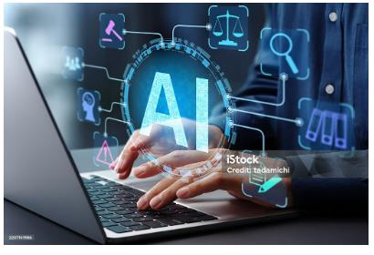
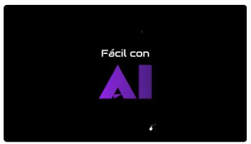

LA PROTECCIÓN DE LA PRIVACIDAD DE LOS USUARIOS ANTE EL AVANCE DE LA INTELIGENCIA ARTIFICIAL
junio 13, 2026
LA PROTECCIÓN DE LA PRIVACIDAD DE LOS USUARIOS ANTE EL AVANCE DE LA INTELIGENCIA ARTIFICIAL
La innovación tecnológica debe avanzar de la mano con la protección de los derechos y la privacidad de las personas.

Introducción
La Inteligencia Artificial (IA) se ha convertido en una de las tecnologías más importantes de la actualidad. Su presencia en aplicaciones móviles, redes sociales, plataformas educativas y servicios digitales ha transformado la forma en que las personas interactúan con la tecnología. Sin embargo, su rápido crecimiento también genera preocupación sobre la privacidad, ya que estos sistemas utilizan grandes cantidades de datos personales.
La privacidad es un derecho fundamental que permite a las personas mantener el control de su información. Por ello, es necesario analizar los desafíos que presenta la IA y las estrategias para garantizar un uso seguro, ético y responsable de los datos.
¿Qué dicen los organismos internacionales?
UNESCO (2021)
La recomendación de la UNESCO plantea que la inteligencia artificial debe desarrollarse respetando los derechos humanos y las libertades fundamentales. También destaca la importancia de proteger la privacidad y de asegurar que los datos personales se utilicen de forma transparente, segura y responsable. Las personas deben poder conocer cómo se recopila y utiliza su información.
Parlamento Europeo (2023)
La protección de datos constituye un elemento esencial en el desarrollo de sistemas de IA. Las empresas y organizaciones que utilizan estos sistemas deben cumplir normas de protección y garantizar que la información se use de manera adecuada y con el consentimiento de las personas.
Agencia Española de Protección de Datos (AEPD)
La AEPD advierte que el uso masivo de información personal puede representar riesgos para la privacidad. Promueve medidas de seguridad, minimización de datos y respeto al derecho de las personas a conocer, corregir o eliminar la información que les pertenece.
Organización para la Cooperación y el Desarrollo Económicos (OCDE)
La OCDE establece que los sistemas de IA deben ser transparentes, seguros y confiables. Sus principios destacan la protección de los datos personales, la privacidad de los usuarios y la responsabilidad de las organizaciones que desarrollan o utilizan tecnologías basadas en IA.
La importancia de la privacidad en la era digital
La privacidad permite a las personas controlar el acceso y el uso de su información personal. En la actualidad, muchas actividades realizadas en internet producen datos que pueden recopilarse, almacenarse y analizarse por diferentes organizaciones.
Desafíos de la Inteligencia Artificial para la privacidad
- Recolección masiva de datos.
- Vigilancia digital.
- Filtraciones de información.
- Falta de transparencia.
Estrategias para proteger la privacidad de los usuarios
- Fortalecimiento de las leyes de protección de datos.
- Consentimiento informado.
- Implementación de medidas de ciberseguridad.
- Transparencia y ética en la IA.
- Educación digital.

▶ Ver video en YouTubehttps://www.youtube.com/watch?v=0AEIg-tMMOM
POSTURA ACADÉMICA
La Inteligencia Artificial representa uno de los avances tecnológicos más importantes de la actualidad. Su capacidad para optimizar procesos y mejorar servicios ha generado beneficios significativos en distintos sectores. Sin embargo, su uso masivo de datos personales plantea desafíos relacionados con la privacidad. Por ello, las organizaciones deben adoptar prácticas éticas y transparentes para proteger la información de los usuarios. La educación digital y el fortalecimiento de las regulaciones son elementos fundamentales para un desarrollo responsable.
CONCLUSIÓN
La Inteligencia Artificial ofrece grandes beneficios, pero también plantea desafíos relacionados con la privacidad. La recopilación masiva de datos, la vigilancia digital, las filtraciones de información y la falta de transparencia son algunos de los principales riesgos. Para enfrentarlos, es necesario fortalecer la protección de datos, promover la transparencia, implementar medidas de seguridad y fomentar la educación digital. De esta manera, se pueden aprovechar las ventajas de la IA sin comprometer la privacidad ni los derechos fundamentales. La OCDE también establece que estos sistemas deben ser transparentes, seguros y confiables.
REFERENCIAS BIBLIOGRÁFICAS
- UNESCO. (2021). Recomendación sobre la Ética de la Inteligencia Artificial. https://www.unesco.org/es/artificial-intelligence/recommendation-ethics
- Parlamento Europeo. (2023). Inteligencia Artificial y protección de datos. https://www.europarl.europa.eu
- Agencia Española de Protección de Datos (AEPD). La privacidad y la Inteligencia Artificial. https://www.aepd.es
- Organización para la Cooperación y el Desarrollo Económicos (OCDE). Principios sobre Inteligencia Artificial. https://oecd.ai
- Russell, S. & Norvig, P. (2021). Artificial Intelligence: A Modern Approach (4.ª ed.). Pearson.
- Fácil con AI. (2023, 2 de noviembre). La IA tiene tus datos personales, protege tus datos y privacidad [Video]. YouTube. Ver video
- UNESCO. (2024). Cuenta oficial en X (Twitter). https://x.com/UNESCO
HAGO CONSTAR QUE NO HE DADO NI RECIBIDO AYUDA NO AUTORIZADA EN LA REALIZACIÓN DE ESTA ASIGNACIÓN